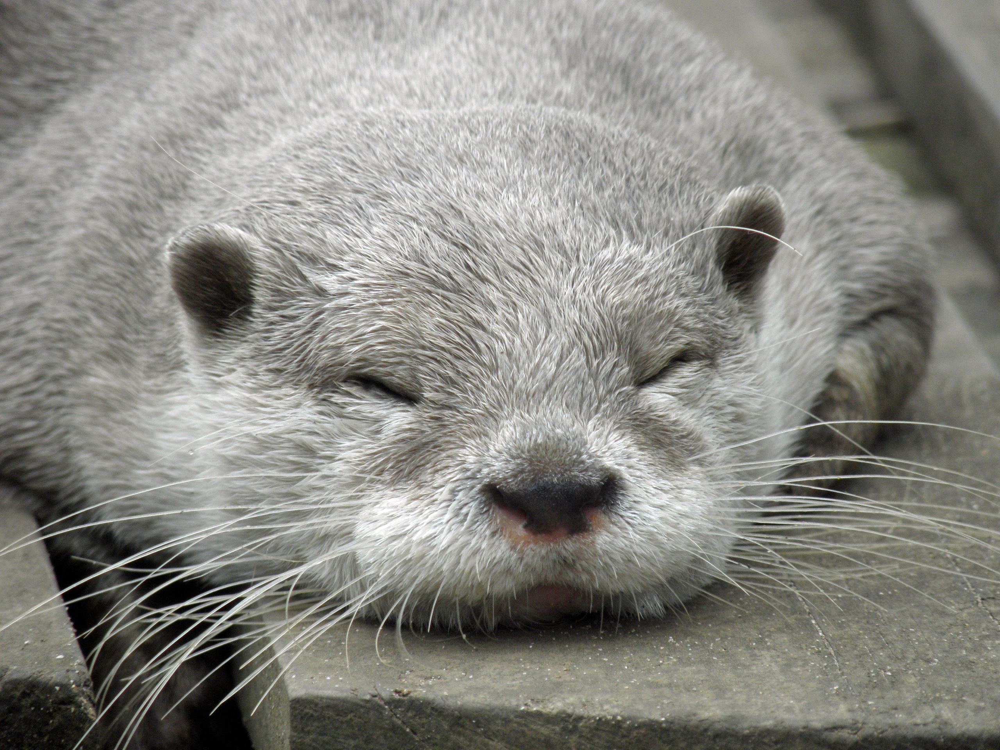

Graphics
This is a Sea Otter.
Questions
- What kind of photos are good to encode using JPEG? - JPEG is best for colorful photos, like pictures of people, nature, or anything with lots of details and shades.
- What kind of photos are good to encode using GIF? - GIF is good for simple images with few colors, like logos, icons, and animations.
- What is unique about the PNG format? - PNG supports transparent backgrounds and keeps image quality high without losing details.
- How do you resize your photo to the size it should be displayed? - You can use photo editing software like Photoshop or online tools to change the width and height of your image.
- Why should you resize photos using photo editing software instead of resizing them using CSS? - Resizing with software makes the file smaller and loads faster, while CSS just shrinks the display but keeps the file size big.